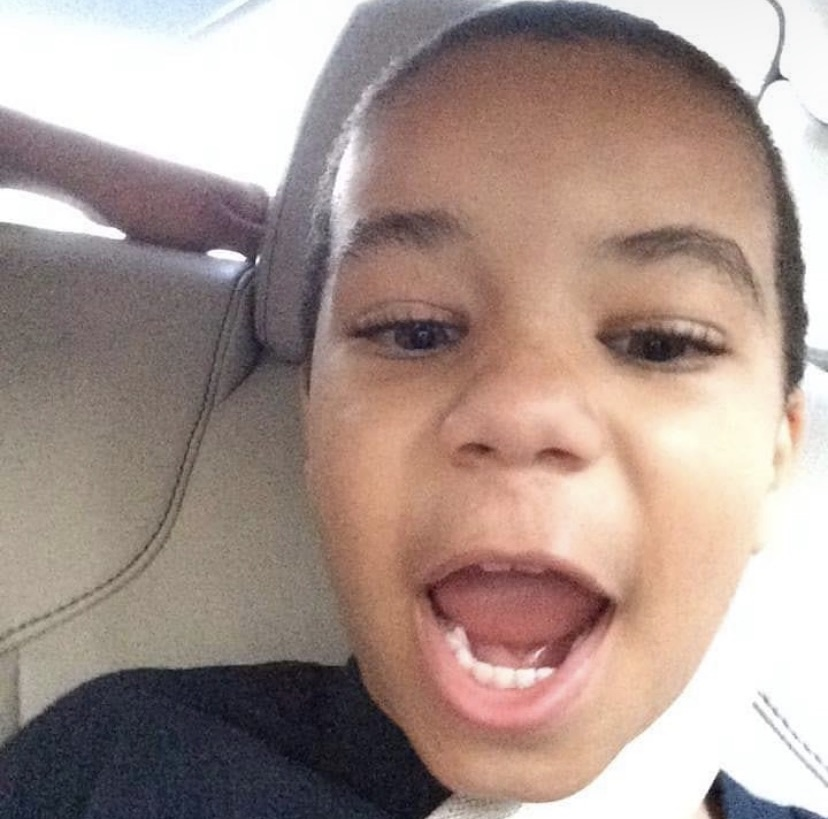

I'm Shawn Peterkin! I'm a 18 year old Computer Programming student at Fayetteville Technical Community College. Although, it may not seem like im passionate about coding and school because of how late these assignments are but I promise I am. I've been around computers and games since I as far back as I can remember. My interest for them was always there and as I got older it just grew and grew eventually into deconstructioning and putting together computer's, PSPs, and other devices. I just wanted to learn more and more and then dived into the space of coding and wanting to build and construct with not just my hands but with lines of code too.